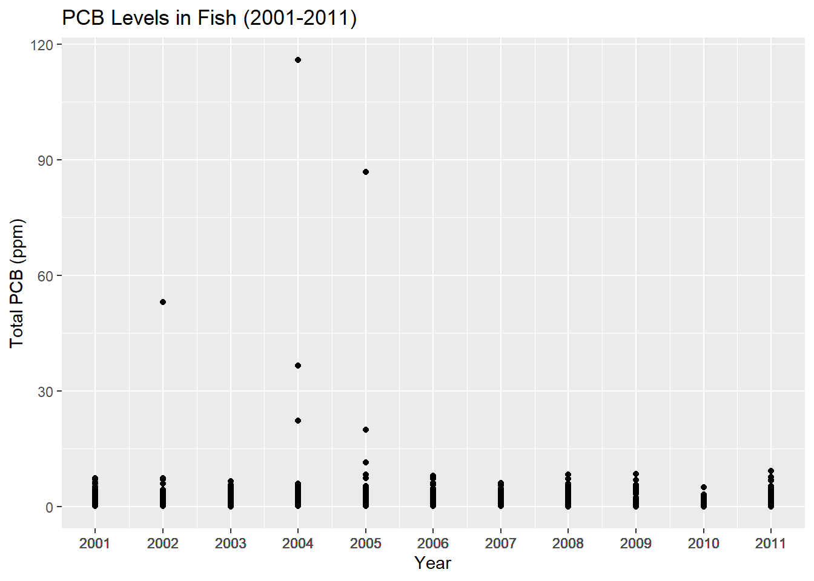
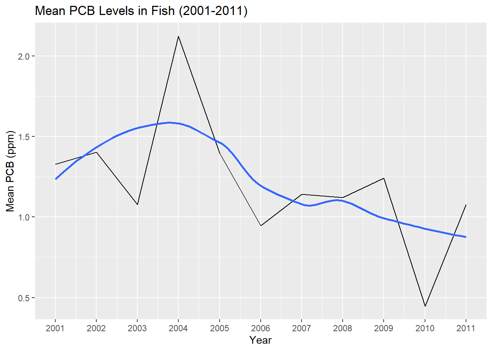
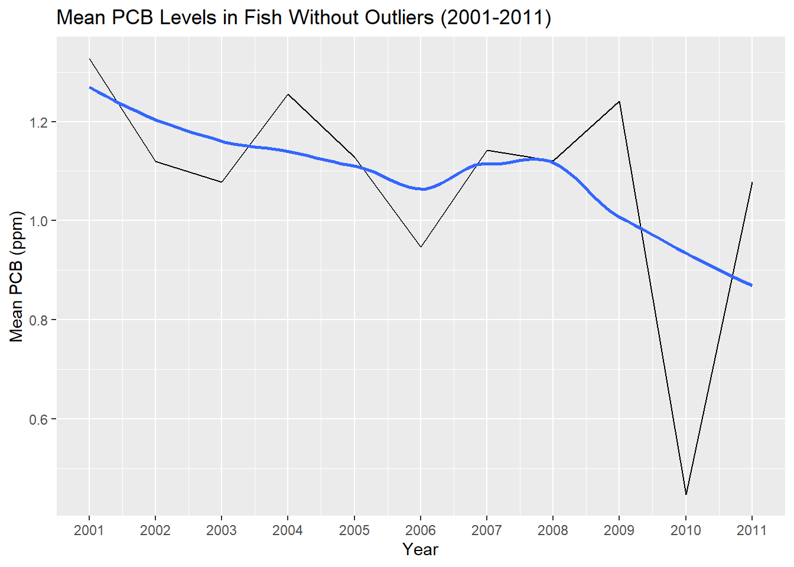

Does the amount of PCB found in the fish decrease over time?
Is there a correlation between fish weight and PCB concentration?
Does the season have any effect on the PCB concentration in fish?
Introduction
The Hudson River, a vital waterway in the United States, faced a formidable environmental challenge stemming from decades of polychlorinated biphenyls (PCBs) contamination up until the late 1970s. The Environmental Protection Agency (EPA) banned PCB production in 1977, however, it was estimated that 1.3 million pounds of PCBs had been discharged into the Hudson River prior to the ban. The widespread PCB contamination in the river’s sediments, raised concerns about its impact on aquatic ecosystems and human health, particularly through the consumption of contaminated fish. In response, the U.S. The Environmental Protection Agency (EPA) designated the Hudson River as a Superfund site, initiating an extensive cleanup effort. The Hudson River PCBs Superfund Cleanup involved dredging PCB-contaminated sediments from certain areas in 2009 and 2011 to 2015, aiming to reduce the overall PCB levels. This study will focus on the concentration of PCB contaminants within the fish living in the Hudson River from 2001 to 2011.
Background
PCBs are a group of synthetic organic chemicals that were once widely used in various industrial applications. They were valued for their stability, electrical insulating properties, and resistance to heat and fire. However, PCBs are considered toxic, and exposure to high levels has been associated with a range of health issues in humans, including damage to the immune, reproductive, and nervous systems. They're also highly resistant to breaking down in the environment, leading to their persistence in soil, water, and air. PCBs can accumulate in the fatty tissues of animals and humans. This bioaccumulation occurs as PCBs move up the food chain, leading to higher concentrations in predators.
Data/Methods
The data that will be used in this analysis is a dataset collected from 2001-2011 on PCB levels in four different species of fish in the Hudson River by the New York Department of Environmental Conservation (NYSDEC). The dataset contains information on the size, weight, sex, PCB content, and when and where the fish was caught. In order to collect this data, every year, the NYSDEC scientists collect approximately 2,000 fish from more than 50 different locations in New York water bodies. The caught fish are then sent to a lab where they are processed for PCB content. The plan in order to successfully answer the questions above was to run a summary statistic to see if there were any obvious trends in the data, a linear regression to see whether there is a correlation between the weight of the fish and PCB content, and a Seasonal and Trend decomposition using Loess (STL Decomposition) to see if there were any changes in PCB content based on the season.
Code
# importing librarieslibrary(tidyverse)library(gt)library(tufte)library(zoo)library(feasts)library(tsibble)library(knitr)library(kableExtra)# read in datapcb <-read.csv("C:/Users/17143/Documents/MEDS/Quarto Websites/BenVerst.github.io/blog/hudson_river_pcb_analysis/data/PCBs in Hudson River Fish - Data.csv")# update the dates into date formatpcb$SDATE <-as.Date(as.character(pcb$SDATE), format ="%Y%m%d")pcb$SDATE <-format(pcb$SDATE, "%Y-%m-%d")
Analysis/Results
Data Exploration and Summary Statistic
Code
# plot dataggplot(data = pcb) +geom_point(aes(x = Year, y = Total.PCB.ppm.)) +ggtitle("PCB Levels in Fish (2001-2011)") +labs(y ="Total PCB (ppm)") +scale_x_continuous(breaks = pcb$Year, labels = pcb$Year)

Code
# taking the mean valuespcb_mean <- pcb %>%group_by(Year) %>%summarize(mean_pcb =mean(Total.PCB.ppm., na.rm =TRUE))# plot mean valuesggplot(data = pcb_mean) +geom_line(aes(x = Year, y = mean_pcb)) +geom_smooth(aes(x = Year, y = mean_pcb), method ="loess", se =FALSE) +ggtitle("Mean PCB Levels in Fish (2001-2011)") +labs(y ="Mean PCB (ppm)") +scale_x_continuous(breaks = pcb_mean$Year, labels = pcb_mean$Year)

The figures above show the levels of PCB in the fish from 2001 and 2011. Based on these graphs, most PCB levels stay relatively low and constant except for a few potential outliers. In order to see a better representation of the trend, the outliers were removed.
Code
# removing outlierspcb_edit <-subset(pcb, Total.PCB.ppm. !=115.960)pcb_edit <-subset(pcb_edit, Total.PCB.ppm. !=86.850)pcb_edit <-subset(pcb_edit, Total.PCB.ppm. !=52.980)pcb_edit <-subset(pcb_edit, Total.PCB.ppm. !=36.610)# storing into a new data setpcb_mean_edit <- pcb_edit %>%group_by(Year) %>%summarize(mean_pcb_edit =mean(Total.PCB.ppm., na.rm =TRUE))# mean plot with no outliers and geom_smoothggplot(data = pcb_mean_edit) +geom_line(aes(x = Year, y = mean_pcb_edit)) +geom_smooth(aes(x = Year, y = mean_pcb_edit), method ="loess", se =FALSE) +ggtitle("Mean PCB Levels in Fish Without Outliers (2001-2011)") +labs(y ="Mean PCB (ppm)") +scale_x_continuous(breaks = pcb_mean_edit$Year, labels = pcb_mean_edit$Year)

Code
# summary statistics for each yearsummary_by_year <- pcb_edit %>%group_by(Year) %>%summarise(Mean =mean(Total.PCB.ppm., na.rm =TRUE),Median =median(Total.PCB.ppm., na.rm =TRUE),Std_Dev =sd(Total.PCB.ppm., na.rm =TRUE) )# Generate the table using kable and kableExtrasummary_by_year %>%kable("html") %>%kable_classic(full_width =FALSE, html_font ="Cambria") %>%row_spec(c(1, 3, 5, 7, 9, 11), background ="#E6F7FF") %>%row_spec(c(0, 2, 4, 6, 8, 10), background ="white")
Year
Mean
Median
Std_Dev
2001
1.3274827
0.8700
1.2284199
2002
1.1199399
0.7940
1.0985864
2003
1.0783750
0.7850
1.0870688
2004
1.2557193
0.5510
2.0577301
2005
1.1284734
0.5510
1.7322199
2006
0.9462967
0.4710
1.2172877
2007
1.1420309
0.7550
1.0483810
2008
1.1204653
0.6575
1.2820803
2009
1.2407791
0.5045
1.5880153
2010
0.4479798
0.2395
0.6099138
2011
1.0778878
0.4585
1.5273802
The figure above displays the mean trend line of the data without outliers and the table shows a summary statistic of the data. Based on the data, it becomes apparent that there is a noticeable decline in PCB content in fish over the years with a few spikes every so often. However, What was very interesting was an extreme decrease in PCB content in the year 2010. While this may be confusing, recalling back to the background, the EPA began dredging the Hudson River in 2009, skipped 2010, and resumed in 2011. A possible explanation for this is when dredging began in 2009, the PCB in the sediment was stirred up causing frequent exposure of PCB to the fish. This also explains the spike in 2009. When dredging halted in 2010, the PCB settled and lowered exposure and in 2011, dredging resumed and stirred back up the sediment.
Linear Regression
Code
# create a linear regressionpcb_lm <-lm(Weight.g. ~ Total.PCB.ppm., data = pcb) %>%summary()# linear regression model without outlierspcb_line <-ggplot(data = pcb_edit, aes(x = Weight.g., y = Total.PCB.ppm.)) +geom_point(color ="darkgreen") +geom_smooth(method = lm, se =TRUE,alpha =0.2,color ="darkblue",fill ="black") +ggtitle("Weight and PCB Levels of Fish Without Outliers (2001-2011)") +labs(x ="Weight (g)",y ="Total PCB (ppm)")pcb_line
The graph above plots a linear regression model of fish weight and how it corresponds to PCB levels found. The outliers were removed because it wouldn't be possible to see a trend and their inclusion made no difference to the trend line. The graph shows that there is barely a correlation between the weight of the fish and PCB content. The trend does increase slightly but not enough to see that there is a direct connection. This result is interesting because usually, larger fish tend to have larger concentrations of PCB. This is due to PCB having a tendency to accumulate in fat cells. There, however, is a reasonable explanation for this result. Most of the fish collected were under 5000 grams and as you can see in the species table above, the striped bass species heavily dominated the dataset. What's particularly unique about striped bass is that they're migratory and only spend a small chunk of their life in the Hudson River. Striped bass in their early stages, may reside in areas of the Hudson River highly affected by contamination and may exhibit elevated PCB levels compared to their older counterparts that may live in less polluted environments, such as the ocean or areas near New York City.
The figure above is a STL Decomposition of PCB content over the years and months. The main focus on this figure is the season_year row. Based on this, it is clear that there is a trend in how the season of the year affects the PCB Content found in the fish. During the Spring, The PCB content found seems to be at its lowest and then continues to rise until Fall. It then decreases again and continues this pattern for the entirety of the study. This seems to show that the temperature throughout the year plays a role in PCB content found in fish.
Limitations
Some potential limitations that may have occurred when going through this study could have been human error when collecting data. Human error plays a big role in the project whether it be when the NYSDEC collects or processes the fish. The reason why there were so few larger fish in the dataset could have been just because larger fish are much harder to catch. When processing the fish, there is always room for human error whenever sample manipulation is done.
What’s Next?
So what's next for this study? Being able to understand how PCB levels change over time in the Hudson River can be very insightful and can be used in other future projects. The monitoring of PCB levels in the Hudson River is also still in effect and is relevant today. Since the dredging ended in 2015, PCB levels in the river have gone down significantly but aren't completely nonexistent. Making steps to remove the PCB entirely could be next in store for the Hudson River.